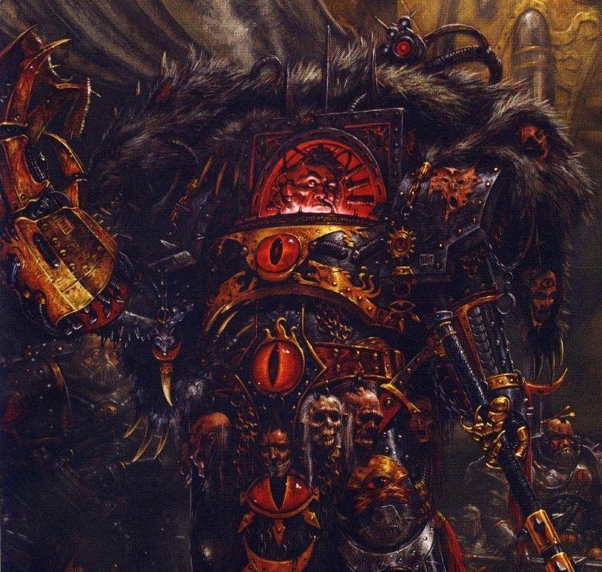

The Luna Wolves were the XVIth Space Marine Legion raised by the Emperor of Mankind on Terra at the dawn of the Great Crusade in the late 30th Millennium. After the Emperor discovered the Legion's Primarch Horus on the world of Cthonia, and gave him command of the Luna Wolves, Horus went on to lead the XVIth Legion in earning thousands of battle honours over the span of the 200 standard years of the Great Crusade. Horus' homeworld was the Hive World of Cthonia which lay only a few light years from Terra.
Horus, also called Horus Lupercal, or more simply The Lupercal during his lifetime by the Astartes of his Luna Wolves Legion, was one of the 20 genetically-engineered Space Marine Primarchs created by the Emperor of Mankind from the foundation of his own DNA before the start of the Great Crusade to lead the armies of the newborn Imperium of Man. Horus was thus the first Primarch to be rediscovered by the Emperor after the Great Crusade began in the early 31st Millennium.
Horus was the Primarch of the Luna Wolves Legion of Space Marines, later renamed the Sons of Horus, the first Imperial Warmaster, the most favoured son of the Emperor of Mankind, and ultimately, the greatest traitor in the history of Mankind. Horus was responsible for unleashing the horrific 9-year-long civil war known as the Horus Heresy upon the Imperium of Man in the early 31st Millennium which killed billions of men, women and children in pursuit of his mad ambition to overthrow the Emperor of Mankind and replace him as the ruler of the human race.
While Horus ultimately lost his bid for power and was slain by the father he had once so loved during the Battle of Terra, his actions damaged the Imperium of Man beyond repair and inaugurated the current Age of the Imperium, when Mankind is beset by countless horrific dangers to its existence and the Imperium itself has become a stagnant, repressive, and dehumanising galactic presence.
"Lupercal!" or "For the Warmaster!"
The Luna Wolves were the XVIth Space Marine Legion raised by the Emperor of Mankind on Terra at the dawn of the Great Crusade in the late 30th Millennium. After the Emperor discovered the Legion's Primarch Horus on the world of Cthonia, and gave him command of the Luna Wolves, Horus went on to lead the XVIth Legion in earning thousands of battle honours over the span of the 200 standard years of the Great Crusade.
Few other Legions could match their achievements and of those that could few could rival the XVIth Legion for the brightness with which their victories shone. Spread across hundreds of Expeditionary Fleets and on countless battlefields, the Luna Wolves broke the enemies of the Imperium and pushed the Great Crusade forwards. The position of Horus as the Emperor's favoured son undoubtedly enhanced their triumphs. The Emperor fought alongside all of the Primarchs, and led all of the Legions at different times, but Horus and the Luna Wolves stood beside him for many of his greatest victories. The Luna Wolves stood with the Emperor from the beginning of the Great Crusade until the Emperor's return to Terra following the triumph of the Ullanor Crusade and the elevation of Horus to the esteemed rank of Warmaster and commander-in-chief of all the Emperor's vast armies.
Yet the character of any Legion was an echo of their Primarch, one can see the flaws of the father in the pride of his sons. Brutal, ruthless and unwavering but also honourable, and once loyal beyond question, the history of the Luna Wolves is the history of the ambition of the Imperium itself, and the flaws that broke its founder's dreams of unification and glory for all Mankind asunder. The XVIth Legion was originally known as the Luna Wolves during the Great Crusade. In honour of Horus' great achievements during the latter years of that era after the Imperial victory over the Orks during the Ullanor Crusade, the Emperor suggested that the Legion be renamed the "Sons of Horus" to honour his most beloved son's accomplishments.
Horus at first refused, fearing that to so set himself above his Primarch brothers would lead to factional strife. Eventually he did institute this change, at his bother Sanguinius' urging, just prior to the events culminating in his conversion to the service of the Dark Gods of Chaos on the world of Davin. After Horus' treachery and final defeat at the Battle of Terra during the Horus Heresy, however, the XVIth Legion was renamed the "Black Legion" by its new Warmaster, Abaddon the Despoiler, the former First Captain of the Legion and commander of its elite 1st Company. The new name was chosen after the Astartes of the Sons of Horus painted their Power Armour black in grief at the death of their Primarch and shame at their failure to overthrow the False Emperor and seize control of the galaxy in the name of the Ruinous Powers.